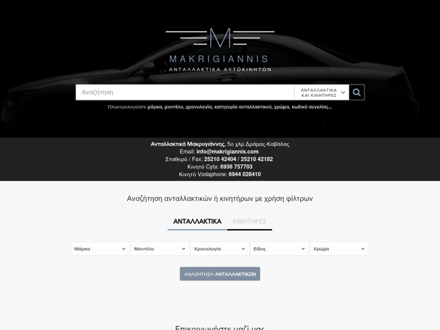

Developer/MD Radiologist
Hire me to help you with your existing webapp or start from the ground up with your next idea!

Developed back in 2006, it was a redesign of an old(but still functional) spare car parts website.
Due to system requirements, vanilla PHP was used and a database tweaks/optimizations were made to load hundreds of entries in just a few milliseconds.
An autocomplete plug-in was developed from scratch, reassigned proper indexes in MySQL and continuous support/maintenance was agreed. Administration panel was also included with basic CRUD operations and some more complex features that cannot be disclosed.
This is my first SaaS attempt started in late 2017 - a wedding website builder.
Everything is made from scratch with Laravel and MariaDB and it is composed of 3 distinct parts: the landing page(Bulma CSS), client admin panel and the client's wedding webpage.
Jolly Moments runs on a relative small size VPS (1GB RAM) and it's fully optimized(Nginx+MariaDB) to run without any lag or latency.
One day with nothing to do, I decided to make a "stupid" game in 3-4 days and Hi-Low for Android was born!
Fast forward 3 years later, this game without any promotion or marketing, got about 13k downloads, featured in a few countries and generated some cash from ads.
For it's standards it was a success!
The original Hi-Lo game was coded without any 2D framework, I used native Java which had it's flows.
Since I had the urge and time to learn something new, I rewrote it using libGDX and the results were impressive.
With the deluxe version, I managed to get higher framerate, smooth UI and smaller APK size, plus the foundation was laid for more features in later releases.